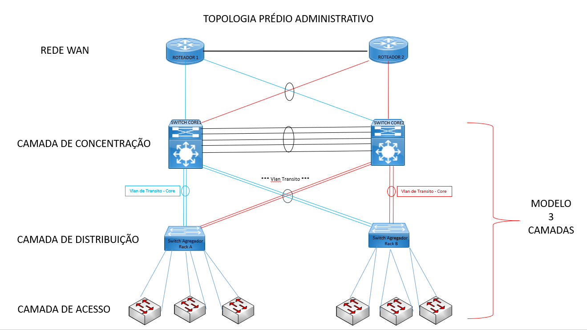
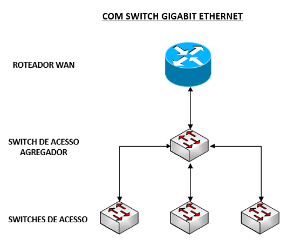
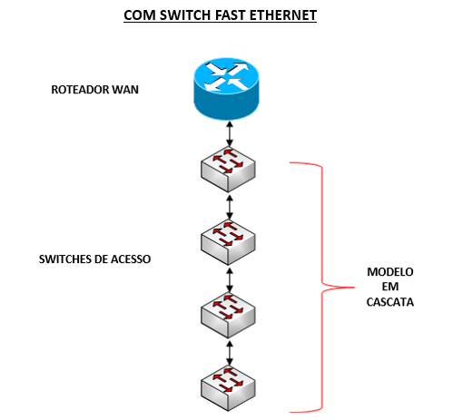
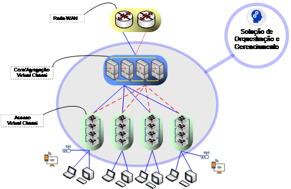
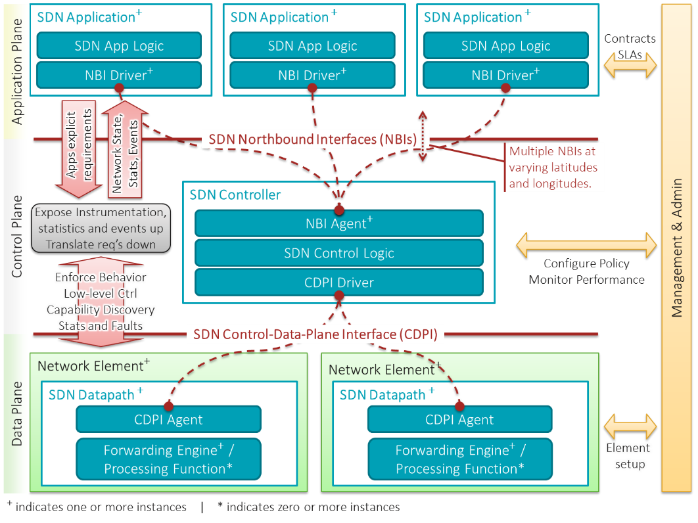

Rede Comutada Corporativa (SDLAN)
Arquitetura de Referência
Este documento de Arquitetura de Referência compreende a representaçãodos elementos que compõem a Rede Local dos prédios administrativos e agências.
Objetivo
Viabilizar a comunicação dos dispositivos corporativos através de conexão local à Rede CAIXA nas agências e prédios administrativos, com maior disponibilidade, flexibilidade e velocidade.
Conectividade
O modelo arquitetural prevê a conexão padrão Ethernet (IEEE 802.3) com os switches corporativos.
Arquitetura Atual
Topologia
-
O modelo de topologia é composto pelos seguintes blocos:
-
Prédio Administrativo;
-
Agências;
-
A conectividade e interoperabilidade devem ocorrer entre todos os elementos definidos nesta topologia.
-
A topologia da rede é destinada ao funcionamento das conexões lógicas dos equipamentos CAIXA em agências e prédios administrativos, atendendo ao tráfego de negócios e efetuando o encaminhamento das transações, obedecendo aos requisitos de qualidade, desempenho, tempo de resposta, segurança e disponibilidade de serviço.
-
Para o bloco Prédio Administrativo utiliza-se como referência o modelo em 3 camadas: Acesso, Distribuição, Core.

Figura 1: Prédio Administrativo - Topologia simplificada -
Para o bloco Agências utiliza-se como referência dois modelos de topologia distintos:

Figura 2: Agência -- Topologia Simplificada 1 
Figura 3: Agência -- Topologia Simplificada 2
Tecnologias utilizadas e Características Técnicas
-
Segmentação de rede através de Virtual Local Area Network (VLAN).
-
Utilização de VLAN de Trânsito para conexão e roteamento entre switches.
-
Implementação de Link Aggregation Control Protocol (LACP) para garantir redundância nas conexões entres switches.
-
Utilização de padrões 802.1d, 802.1s e 802.1w para Spanning Tree, Multiple Spanning Tree e Rapid Spanning Tree, respectivamente.
-
Gerenciamento por dispositivo via conexão local (console) ou conexão remota via protocolo ssh.
-
Controle de Multicast a partir de IGMP Snooping.
-
Filtragem de pacotes através de Acess Control List com definições de parâmetros de camada 2.
-
Controle de acesso por porta, usando o padrão IEEE 802.1x (Port Based Network Access Control).
-
Mecanismos de AAA (Authentication, Authorization e Accounting) com garantia de entrega.
-
Suporte a NTP (Network Time Protocol) ou STNP (Simple Network Time Protocol).
Arquitetura Futura
Topologia
-
A conectividade e interoperabilidade devem ocorrer entre todos os elementos definidos nesta topologia.
-
A topologia da rede é destinada ao funcionamento das conexões lógicas dos equipamentos CAIXA em agências e prédios administrativos, atendendo ao tráfego de negócios e efetuando o encaminhamento das transações, obedecendo aos requisitos de qualidade, desempenho, tempo de resposta, segurança e disponibilidade de serviço.
-
O modelo de topologia é único para agências e prédios administrativos composto com 2 camadas (Agregação/Core e Acesso) e utilização de Virtual Chassi para agregação de switches.

Figura 4: Topologia padrão - SDLAN
Tecnologias utilizadas e características técnicas
-
Padrão SDN (Software Defined Network) com a separação da rede em dois planos, o plano de controle (Administração e políticas) do de Dados (encaminhamentos e formação de quadros e pacotes). O plano de Controle contempla toda a inteligência administrativa e de políticas da estrutura SDN. Este plano é responsável pelo estabelecimento, automatizado ou não de todas as regras e configurações que deverão ser obedecidas pelo plano de dados. O plano de dados é a comutação física propriamente dita, composto pelos equipamentos (hardware e software) interligado por cabos e fibras óticas.
-
O Plano de Controle, a princípio, pode gerir o plano de dados, independente dos equipamentos ou hardwares existentes, podendo atuar, teoricamente com parques compostos por equipamentos de diversos fabricantes.
-
O Plano de Dados, segue rigorosamente o determinado pelo Plano de Controle, consultando-o em situações não predefinidas acerca dos encaminhamentos, ou conforme a estratégia definida para os encaminhamentos.
-
Capacidade de gerenciamento e orquestração centralizado, possibilitando maior controle e gestão de ambientes com muitos equipamentos;
-
Distribuição de políticas em todo o parque sem a necessidade de configurações individuais;
-
Capacidade de automações constantes, análise de informações de segurança e troubleshooting facilitadas pelas informações centralizadas, possibilitando a utilização de motores de análises de dados e Inteligência Artificial.
-
Escalabilidade por não necessitar necessariamente crescer o plano de controle com a inserção de novos comutadores no plano de dados.
-
Os elementos constantes na Arquitetura do SDN estão conceitualmente estabelecidos no seguinte diagrama:

Fonte: Open Networking Foundation (ONF) - SDN Architecture Overview (PDF), Version 1.0, December 12, 2013., CC BY-AS 3.0, https://commons.wikimedia.org/w/index.php?curid=36034296 -
A arquitetura está dividida em 3 planos: O de Aplicação, o de Controle e o de Dados, separados por interfaces, onde na camada superior existe o driver que se comunica com o agente (Agent).
-
O Plano de aplicação é o domínio das aplicações preparadas para SDN. Estas devem possuir uma condição de estabelecer, para a camada de controle, suas necessidades de comunicações como requisitos.
-
O plano de Controle, gerido pelo Controlador SDN, recebe os requisitos das aplicações e converte em políticas e configurações SDN, respeitando os limites dos componentes abaixo, do plano de dados, e das políticas anteriormente estabelecidas.
-
Os controladores SDN podem ser implementados em clusters, podem atuar hierarquicamente, de maneira distribuída, ou individualmente, conforme arquitetura definida.
-
A Camada de controle então distribui as políticas e configurações para os elementos do plano de dados (SDN Datapath -- equipamentos), configurando-os para executarem os requisitos de comunicação exigidos pelas aplicações.
-
Considerando que todas as comunicações do ambiente dependem da comutação, é natural que esta camada também proveja diversas informações essenciais para o gerenciamento das políticas, capacitando a implementação de dashboards de monitoração mais efetivos.
-
Suporte ao protocolo NTPv3 (Network Time Protocol, versão 3);
-
Suporte ao padrão IEEE 802.1s (Multi-Instance Spanning-Tree);
-
Controle de acesso por porta, usando o padrão IEEE 802.1x (Port Based Network Access Control);
-
Suportar a autenticação 802.1x via endereço MAC em substituição à identificação de usuário, para equipamentos que não disponham de suplicantes;
-
Deve ser suportada a atribuição de autenticação através do navegador (Web Authentication) caso a máquina que esteja utilizando para acesso à Rede não tenha cliente 802.1x operacional;
-
Suportar a configuração de 802.1x utilizando autenticação via usuário e MAC simultaneamente na mesma porta do switch;
-
Suportar o padrão IEEE 802.1ad (Q-in-Q) e Q-in-Q seletivo;
-
Suportar o protocolo ERPS (Ethernet Ring Protection Switching) segundo o padrão ITU-T G.8032;
-
Suportar 802.1ag standard Connectivity Fault Management (CFM) ou 802.3ah Ethernet in the first mile (EFM).
-
Mecanismo de autenticação ao equipamento baseada em um servidor de autenticação/autorização do tipo TACACS, TACACS+ e RADIUS;
-
Filtragem de pacotes (ACL - Access Control List) utilizando os seguintes parâmetros: Endereço MAC de origem e destino, Endereço IP de origem e destino, Porta TCP e UDP de origem e destino, Valor do campo DSCP e IP Precedence e TCP Flags;
-
Permitir a associação de um endereço MAC específico a uma dada porta do switch, de modo que somente a estação que tenha tal endereço possa usar a referida porta para conexão;
-
Mecanismos de AAA (Authentication, Authorization e Accounting) com garantia de entrega;
-
Controle de broadcast, multicast e unicast por porta.
-
Suporte a mecanismo de proteção da "Root Bridge" do algoritmo "Spanning-Tree" para defesa contra ataques do tipo "Denial of Service" no ambiente nível 2.
-
Possuir análise do protocolo ARP (Address Resolution Protocol) e possuir proteção nativa contra ataques do tipo ARP spoofing.
-
Suporte a MAC-Forced Forwarding (MFF) e Dynamic ARP Inspection (DAI);
-
Suporte a IP Source Guard.
-
Implementar mecanismos de autenticação, autorização e accounting (AAA) via RADIUS, com suporte RFC 2138 RADIUS Authentication e RFC 2139 RADIUS Accounting.
-
Possibilitar o estabelecimento do número máximo de MAC´s que podem estar associados a uma porta do switch. Deve ser possível envio de trap SNMP caso o número de endereços MAC configurados para a porta seja excedido.
-
Permitir a associação de um endereço MAC específico a uma porta do switch, de modo que somente o endpoint que tenha tal endereço possa usar a referida porta para conexão.
-
Possuir a funcionalidade de controle de tráfego broadcast (Broadcast Storm Control) podendo configurar a quantidade de pacotes broadcast por segundo permitida na rede e deve permitir a configuração de ações como shutdown na porta.
-
Suportar método de segurança para o protocolo DHCP que permita que somente determinadas portas sejam autorizadas a responder às requisições DHCP.
-
Deve implementar funcionalidade de encaminhar pacotes DHCP para múltiplos destinos (DHCP RELAY).
-
Deve suportar protocolo Netstream, Netflow, Sflow ou similar para coleta e envios de fluxos.
-
Implementar controle de acesso por porta, usando o padrão IEEE 802.1x (Port Based Network Access Control):
-
Implementar 802.1x, permitindo que a porta do switch seja associada a VLAN definida para o usuário no Servidor RADIUS;
-
Implementar 802.1x, permitindo que seja designada uma VLAN com políticas restritas para o usuário quando o endpoint falha na autenticação;
-
Implementar autenticação 802.1x, com Downloadable ACL;
-
Implementar autenticação 802.1x, com redirecionamento dinâmico para URL;
-
Implementar a autenticação 802.1x, de múltiplos usuários conectados a uma única porta, atribuindo-os a VLANs distintas de acordo com o atributo RADIUS encaminhado na etapa da autenticação;
-
Implementar funcionalidade para identificação dinâmica de dispositivo que não suporta suplicante 802.1x, fazendo o envio das informações do cliente contida no atributo \"class-identifier\", localizado nos pacotes DHCP através das mensagens do tipo radius accounting.
-
Suportar diferenciação entre Vlan de Voz e Vlan Dados (multidomínio).
-
Deve ser possível definir o intervalo de tempo para obrigar o cliente a se reautenticar (reautenticação periódica).
-
Suportar a implementação de túneis CAPWAP entre os switches para envio de quadros de autenticação do 802.1x com o tráfego cifrado.
-
Deve possuir a funcionalidade CoA (Change of Authorization) definida na RFC 5176.
-
Implementar mecanismo de criptografia entre o suplicante 802.1x do endpoint e o switch, através do protocolo Media Access Control Security definido no padrão 802.1AE.
-
Implementar mecanismo de microssegmentação, que faça bloqueio de comunicação entre os endpoints dentro de uma mesma VLAN, de forma dinâmica e seletiva através do uso de identificador configurado na matriz de interesse presente na solução atual de RADIUS existente na CAIXA.
-
Implementar autenticação RADIUS baseada em endereço MAC.
-
Implementar ACL (Access Control List), suportando critérios de camada 2, 3 e 4.
-
A implementação das ACLs deve ser feita em hardware específico (ASIC), sem perda de performance do equipamento (wire-speed).
-
Implementar técnica de proteção contra ataques de DHCP no caso de algum invasor assumir a funcionalidade de servidor de DHCP na rede.
Outras considerações
-
O modelo de arquitetura futura prevê a coexistência e compatibilidade com o modelo de arquitetura legado, de forma que a transição entre os modelos possa ser realizada de forma modular ou gradual.
-
O modelo de gerenciamento e orquestração centralizado, previsto na arquitetura futura pode ser implementado tanto de "on premise" quanto em nuvem pública ou privada.
-
A topologia de referência na nova arquitetura pode ser flexibilizada em função da disponibilidade de recursos, bem como em relação aos diferentes dimensionamentos dentro das unidades CAIXA.
Histórico das Revisões
| Data | Versão | Descrição | Responsável |
|---|---|---|---|
| 19/07/2022 | 1.1 | Emissão inicial do documento | Pablo Oviedo |